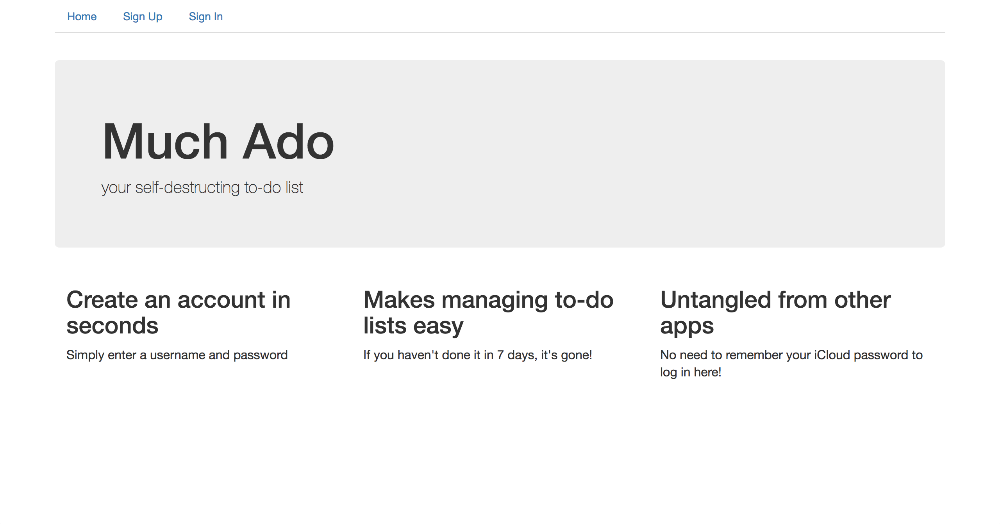
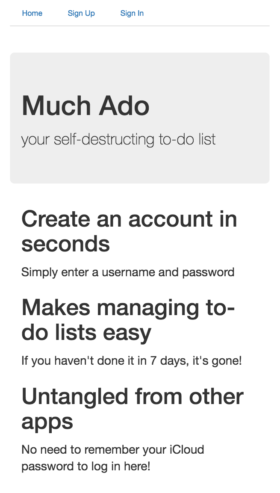
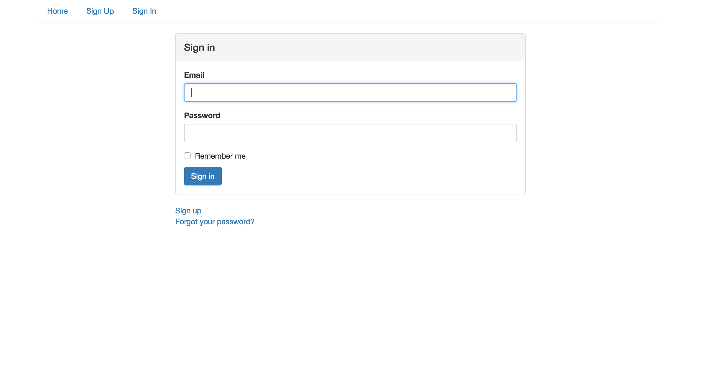
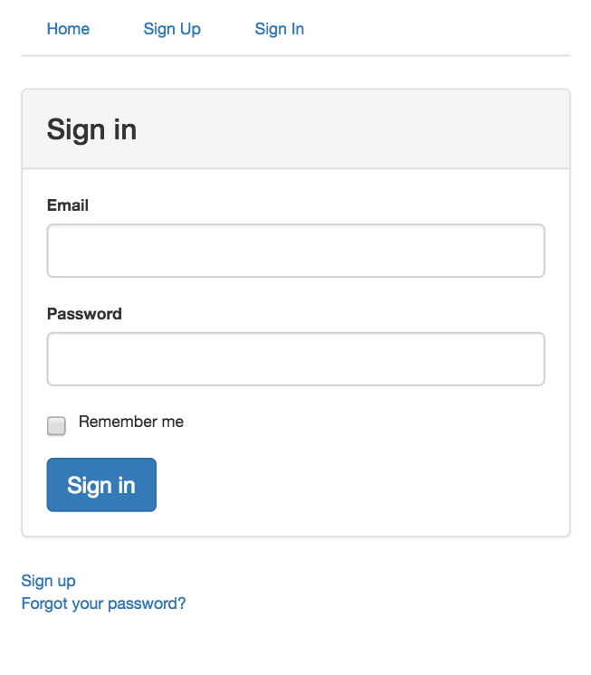
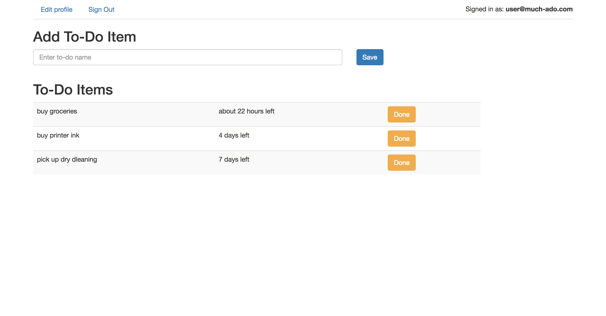
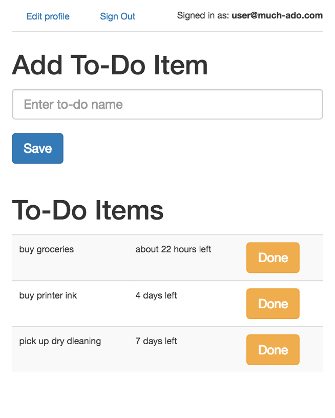

A simple to-do list to help you stay organized. Please see below for screenshots of this web app's layout and a brief overview of its features. Feel free to check out this web app online. Pardon the URL as this web app is hosted on Heroku.
Checkout Web App  Built with Ruby on Rails and Devise, Much Ado makes your to-do list easy to access and keeps it secure.
 Much Ado allows you 7 days to complete your to-do items and then deletes them. If you haven't completed a to-do item in that time, chances are it wasn't that important after all!
 Much Ado is mobile responsive. No need to look any further if you're viewing this page vertically on your mobile device. If you're viewing this page on your desktop compouter, open it on your mobile device to see how things look